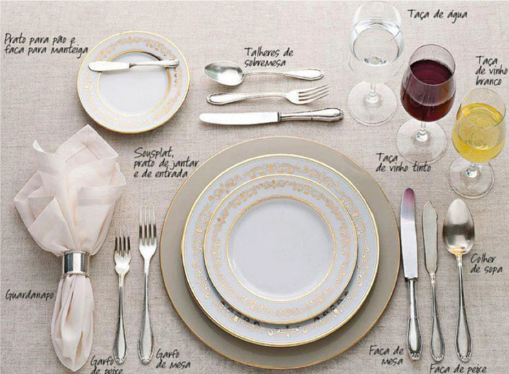

Marketing pessoal: imagem (vestuário, normas de etiqueta e comunicação), networking (conceito e uso) e boas práticas no relacionamento interpessoal
No cenário atual, marcado pela competitividade do mercado de trabalho, a capacidade de se destacar por meio do marketing pessoal é fundamental para o sucesso do profissional de secretariado. Neste material, você conhecerá aspectos sobre imagem e verá dicas importantes para vestuário, normas de etiqueta e comunicação. Além disso, também entenderá como funciona o networking, o seu conceito e a sua utilização. Por fim, verá as boas práticas no relacionamento interpessoal e dicas para uma boa utilização das redes sociais.
Marketing pessoal
Ao adquirir um produto, uma das coisas que motiva o comprador é a embalagem, pois forma, cor e tamanho chamam a atenção.
Porém, se o produto que estiver dentro da embalagem não agradar, a compra não será efetuada. O processo é o mesmo no marketing pessoal. A imagem é muito importante, mas o primordial é o que a pessoa realmente é. Assim como no presente, se a embalagem for bonita, mas o conteúdo não agradar, em um processo seletivo, o candidato não será escolhido, por exemplo.
O profissional de secretariado vem ganhando destaque em posições estratégicas nas organizações. Então, o marketing pessoal é essencial, considerando que esse profissional é visto como gestor da informação.
Os gestores desejam encontrar pessoas que saibam se comunicar, que mostrem confiança, valores, ética, iniciativa, inteligência emocional e que se relacionem bem com os outros. Afinal de contas, para a construção da sua marca pessoal, todas as suas ações importam. A maneira como você se comunica – escrita ou verbalmente –, como você se comporta e como você se veste transmite uma mensagem. Você pode escolher intencionalmente qual marca deseja construir, atentando-se para todos esses pontos e agindo de maneira estratégica de acordo com a maneira como você deseja ser lembrado.
Segundo Vieira (2009), o marketing pessoal é a principal ferramenta de comunicação que cada um tem em si mesmo e envolve individualidade, personalidade, habilidades e competências, enfim, a identidade de cada pessoa.
Pode-se compreender o marketing pessoal como a maneira como se é lembrado pelas pessoas com quem se convive, mesmo quando não se está presente, conversando com essas pessoas.
Observe os exemplos e veja quais pessoas você consegue identificar:
Clique ou toque para visualizar o conteúdo.
Pelé
Madonna
Ayrton Senna
Gisele Bündchen
Rei do futebol: Pelé.
Rainha do pop: Madonna.
Rei de mônaco: Ayrton Senna.
Supermodelo brasileira: Gisele Bündchen.
E você, pelo que quer ser lembrado?
O marketing pessoal é uma ferramenta indispensável para o profissional de secretariado, pois este trabalha com diferentes tipos de públicos nas organizações, exercendo o papel de receptor tanto do público externo quanto do público interno e sendo responsável por passar uma boa imagem da empresa onde trabalha. É essencial que os profissionais de secretariado estejam atentos à construção de sua imagem pessoal também de acordo com o que é exigido pela organização onde trabalham.
O profissional de secretariado que faz somente o que é solicitado é apenas mais um secretário ou uma secretária. Contudo, quando utiliza suas habilidades e suas qualidades juntamente ao seu conhecimento, agrega valores à sua existência na empresa.
Marketing pessoal na profissão de secretariado
Você, como futuro técnico ou futura técnica em secretariado, deve utilizar o marketing pessoal a seu favor.
Existem pessoas que fazem um ótimo trabalho nas organizações, isto é, sempre conseguem alcançar bons resultados, fazem tudo certo, cumprem metas, mas nunca são lembradas para fazer parte de um novo desafio, ficando sempre na mesma posição. Não são lembradas por não trabalharem a sua própria marca, a sua imagem, os seus resultados intencionalmente.
Portanto, o marketing pessoal deve ser utilizado corretamente, valorizando o relacionamento do profissional de secretariado com as pessoas no ambiente de trabalho e também com o público externo das organizações, a fim de atingir o sucesso profissional.
Veja agora alguns pontos importantes que ajudarão você a desenvolver o seu marketing pessoal:
Imagem
A imagem pode expressar o caráter, a postura e a personalidade do indivíduo e é construída desde a primeira impressão. Sendo assim, ter uma boa imagem pode ser um diferencial para uma carreira bem-sucedida.
Clique ou toque para visualizar o conteúdo.
Vestuário
Ter uma boa imagem não significa ser “feio” ou “bonito”, mas, sim, estar bem cuidado e limpo, pois “a primeira impressão é a que fica”.
Ao encontrar uma pessoa, o primeiro impulso é julgá-la pela roupa que está vestindo. Porém, nem sempre o que a pessoa veste representa o caráter ou o comportamento dela. Obviamente, vestir-se bem é importante independentemente de condição financeira. As roupas devem estar de acordo com o local e a ocasião. O ideal é saber vestir-se bem em todas as ocasiões.
Você, como profissional de secretariado, será o cartão de visita da empresa. Portanto, faça boas escolhas na hora de comprar roupas e sapatos para não se tornar vulgar, pois a sua aparência no ambiente de trabalho é extremamente importante.
Vestir-se adequadamente é o segredo para aumentar ainda mais a credibilidade da imagem profissional.
Dicas para você se vestir adequadamente no ambiente de trabalho
Algumas empresas têm regras para a roupa de trabalho ou disponibilizam uniformes. O ideal é que os profissionais consigam se alinhar a essas regras na hora de compor os looks de trabalho.
A roupa ideal para o trabalho de secretariado dependerá muito da área em que a empresa atua e de como é o ambiente. Ainda assim, a opção mais segura é investir em roupas clean, que não chamem tanto a atenção e que sejam simples.
Clique ou toque para visualizar o conteúdo.
Em uma empresa mais formal, é interessante trabalhar com um tailleur (terno) com cores escuras. Já em empresas não tão formais, recomenda-se utilizar roupa social esporte fino, como camisa e calça sociais. Em empresas mais despojadas e modernas, as mulheres podem investir em um look mais leve, como uma calça jeans e uma blusa.
As mulheres precisam ter cuidado com decotes, brincos grandes, pulseiras barulhentas, roupas muito apertadas e transparentes, saias muito curtas e maquiagem muito pesada.
Em um trabalho que haja contato direto com a diretoria, é interessante se vestir com um estilo formal. Uma boa opção é utilizar terno mais escuro e gravata, sem cores que chamem muita atenção.
Algumas empresas também podem exigir que o candidato tenha cabelo curto ou o amarre caso seja comprido, não use brincos e acessórios ou não use barba, por exemplo. Tudo dependerá do tipo de empresa. Em uma empresa tradicional, normalmente tudo é mais formal, diferentemente de uma empresa mais descolada. Se a empresa for mais moderna, recomenda-se investir em trajes esporte fino, como camisa e terno sem gravata.
Para empresas modernas e mais informais, como a Google e outras empresas de tecnologia, a opção é investir em um look um pouco mais leve, como calça jeans escura, camiseta com gola e sapatos escuros.
Que tal praticar?
Como você viu, o cuidado com a apresentação pessoal (vestimentas e acessórios) é extremamente importante para transmitir a imagem desejada na construção do marketing pessoal. Saber se vestir de acordo com o código de vestimenta da empresa e se adaptar para as diferentes ocasiões corretamente são ações que demonstram profissionalismo, respeito e atenção aos detalhes – características fundamentais para o sucesso dos profissionais de secretariado.
Para fixar esse conteúdo, você deve escolher a composição correta dos looks que mais se adequam para cada situação apresentada a seguir.
Espera
Normas de etiqueta
A imagem também é formada pela etiqueta comportamental do profissional. As roupas fazem parte da imagem do indivíduo, mas também devem estar acompanhadas de boas atitudes.
As normas de etiqueta referem-se às regras de conduta que regem o comportamento social e profissional dos membros de uma sociedade ou uma organização.
Cada vez mais, as organizações estão requerendo de seus colaboradores uma postura profissional e elegante nos relacionamentos com clientes internos e externos.
O conhecimento e a prática correta das normas de etiqueta ajudarão você a ser um profissional de secretariado diferenciado, possibilitando um comportamento com mais confiança, simplicidade e naturalidade diante de situações inusitadas, além de melhorar o seu relacionamento com colaboradores, diretoria e gestores.
As normas de etiqueta são um conjunto harmonioso de regras de boas maneiras, bons costumes, normas, hábitos, atitudes e gestos que resultam no comportamento das pessoas.
As normas variam de acordo com o lugar e a área de atuação do profissional, mas independentemente de o local ser mais ou menos formal, todas as profissões requerem comportamentos básicos.
O profissional bem-sucedido precisa estar preparado para várias situações do dia a dia, as quais podem se transformar em uma oportunidade de sucesso profissional ou em um desastre, caso ele não saiba se portar adequadamente.
Quando você, como secretária ou secretário, precisar participar de um almoço ou um jantar de negócios, é a sua imagem que representará a empresa. Logo, seja simpático e pontual, não fale enquanto estiver comendo, evite ingerir bebidas alcoólicas, utilize talheres, taças e louças na ordem correta e deixe o celular desligado ou no modo silencioso. Não se esqueça de manter os ombros relaxados e os braços próximos ao tronco, pois é deselegante inclinar o corpo sobre o prato para comer.
Em ocasiões mais formais, não são utilizados copos, e sim taças. Estas são colocadas na ordem em que devem ser utilizadas ao lado direito do prato: taça de vinho branco, taça de vinho tinto, taça de água e taça de champanhe. Se for uma refeição mais informal, a taça continua ao lado direito do prato, mesmo quando forem utilizados copos.

Mesa formal
Fonte: Adaptado de Melo e Durante (2019)
No centro há um descansa prato redondo. Em cima desse descansa prato, há mais dois pratos redondos e rasos: um médio e, em cima do médio, um pequeno. À direta dos pratos, há duas facas e uma colher: uma faca maior próxima aos pratos, a faca menor no meio e, ao lado da faca menor, a colher. Ainda à direita, na diagonal, há três taças: uma de vinho branco, próxima das facas e da colher, uma de vinho tinto, ao lado da de vinho branco (no meio) e uma de água ao lado da de vinho tinto. À esquerda dos pratos, há dois garfos e um guardanapo devidamente dobrado com um anel no meio dele: um garfo maior próximo ao prato, o garfo menor no meio e, ao lado do garfo menor, o guardanapo. Ainda à esquerda, na diagonal, há um prato redondo e pequeno com uma faca pequena sobre ele para colocar um pedaço de pão. Por fim, acima dos pratos do centro da mesa, há talheres menores, os talheres de sobremesa. Perto dos pratos, há uma faca pequena de sobremesa, ao lado dessa faca, há um garfo de sobremesa e ao lado desse garfo, há uma colher.
A postura profissional adequada é essencial no ambiente de trabalho.
A postura do profissional deste milênio, de acordo com as demandas do mercado e do ambiente organizacional, está voltada ao profissional hábil, proativo, flexível, resiliente e preparado para lidar com mudanças.
A postura ética e moral tem sido um dos grandes desafios enfrentados pelas organizações, considerando que o ambiente é formado por pessoas (com opiniões e culturas diferentes) e necessita de um perfil de profissional que facilite os processos por meio da troca de experiências e da proatividade nas relações de trabalho.
Barcellos e Pedroso (2012) afirmam que alguns comportamentos podem prejudicar a atuação do profissional, como agressividade ao falar, intimidade invasiva, infantilidade, egoísmo, resistência a mudanças etc.
Faça uma autoavaliação para se conhecer e ser honesto diante suas atitudes.
Como secretário ou secretária, você precisa ser discreta e saber a hora certa de falar, sempre com respeito. Observe estas 11 dicas para uma boa convivência nas organizações:
Respeite os limites e as diferenças dos colegas de trabalho.
Mantenha uma boa aparência.
Respeite as hierarquias.
Saiba escutar, opinar e avaliar diferentes opiniões.
Seja pontual com os compromissos agendados.
Cumprimente todas as pessoas que passam por você no ambiente de trabalho.
Execute todas as tarefas que cabem a você.
Seja organizado.
Olhe sempre nos olhos da pessoa com quem está falando.
Sente-se corretamente.
Com relação ao celular, deixe-o no modo silencioso e evite ligações pessoais, ou procure um local mais reservado para tal.
Toda organização que trabalha a linguagem é muito parecida tanto nas roupas quanto no comportamento. A etiqueta hoje está associada à qualidade nos relacionamentos, sendo fundamental para a carreira profissional.
Netiqueta
Além do cuidado com as normas de etiqueta em ambientes presenciais, também é importante atentar para a postura no ambiente digital. Para esse conjunto de normas e boas práticas para o ambiente on-line, dá-se o nome de netiqueta. Seuprincipal objetivo é orientar as ações de comunicação digital dos usuários, e promover um ambiente on-line mais respeitoso, cordial e produtivo.
Atualmente, com o grande volume de interações sociais por canais digitais, sejam profissionais, sejam pessoais, sejam de estudo, saber como se portar bem “no on-line” é fundamental para construir relacionamentos saudáveis e produtivos.
Para garantir uma comunicação assertiva e ética nos ambientes digitais, tenha em mente estas dicas práticas:
Clique ou toque para visualizar o conteúdo.
Utilize linguagem cordial, evite xingamentos e ofensas e respeite a diferença de opiniões.
Escrever frases ou textos inteiros em letras maiúsculas pode ser interpretado como se você estivesse gritando. Utilize esse recurso apenas para dar destaque a palavras ou alguma frase importante.
Antes de enviar a mensagem, revise-a cuidadosamente para evitar erros gramaticais e ortográficos. Também tenha em mente qual local você está utilizando para se comunicar. Sempre que estiver em situações de comunicação profissional, não utilize abreviações ou gírias.
Não compartilhe informações pessoais de outras pessoas sem o consentimento delas. Seja cauteloso ao publicar fotos ou vídeos de (ou com) terceiros.
Pense antes de publicar ou compartilhar conteúdos e mensagens. Nunca expresse conteúdos ofensivos, discriminatórios ou que possam causar danos a outra pessoa.
Ao seguir essas dicas práticas, você está contribuindo para a construção de um ambiente on-line mais positivo e respeitoso para todos!
Comunicação
Segundo Joel Reis (2017), a comunicação é uma importante ferramenta de projeção da imagem positivamente. A boa comunicação é essencial para viver em sociedade e estabelecer relacionamentos construtivos.
O maior objetivo da comunicação é promover o entendimento entre as pessoas. Todo e qualquer relacionamento está baseado em um processo de comunicação.
Você, como secretário ou secretária, precisará saber se expressar, pois estará ligado a diversos setores da empresa, necessitando passar informações de forma clara e concisa. Não se esqueça de que ser discreto quanto às informações recebidas é essencial no dia a dia do profissional de secretariado.
Veja algumas dicas para uma comunicação eficaz:
Pergunte se o assunto é urgente.
Fale pausadamente e com um tom de voz agradável.
Quando estiver falando com a alguém, não faça gestos demais e não toque na pessoa.
Quando receber uma mensagem ou um recado, anote-o de forma clara e informe a pessoa interessada. Não deixe para anotar o recado mais tarde.
Anote o recado de forma legível, sem erros de português, e coloque nele nome, telefone, assunto, dia e hora.
Limite-se a informar exatamente a mensagem que recebeu.
Faça o possível para que a comunicação no local de trabalho aconteça eficientemente, sem ruídos. Os ruídos são problemas na transmissão de mensagens, ordens ou tarefas que envolvam duas ou mais pessoas, além de serem muito comuns. A pessoa que comunica a mensagem é o emissor, já a que recebe a mensagem é o receptor.
Ruídos
Fonte: Cordeiro (2015)
A imagem mostra dois homens, um afirmando que o outro foi promovido, mas, devido ao ruído de comunicação, esse outro homem escuta que será demitido.
Ruído é tudo que interfere na comunicação. São exemplos de ruído: e-mails mal escritos, documentos ilegíveis, mensagens inaudíveis, falta de clareza na linguagem etc.
Outro ponto importante na comunicação é a postura corporal, pois o corpo fala mais do que as palavras.
Cruzar os braços e as pernas, por exemplo, é uma maneira de o corpo colocar uma barreira entre você e uma outra pessoa. Veja outros exemplos de postura corporal:
Morder os lábios pode indicar ansiedade e medo.
Levantar as sobrancelhas pode significar preocupação, medo ou surpresa.
Estalar os dedos pode indicar ansiedade, impaciência.
Mexer nos cabelos excessivamente pode indicar insegurança e timidez.
Olhar para cima e para a direita pode significar tédio.
A linguagem do corpo faz parte da comunicação humana. Portanto, você, como profissional de secretariado, deverá estar atento às suas atitudes, pois elas poderão abrir novas portas em sua vida profissional.
Networking
A palavra “networking” significa “rede de trabalho” e é muito utilizada no mundo empresarial. Também pode ser compreendida como a construção de relacionamentos com pessoas, objetivando compartilhar informações, trocar ideias, colaborar em projetos e buscar oportunidades mútuas.
O ideal é que você tenha uma boa rede de contatos, pois, quanto maior ela for, maiores serão as chances de ser lembrado e indicado para novos projetos. É importante que grande parte de seus contatos esteja ligada ao trabalho que desenvolve e tenha interesses parecidos com os seus.
Assim como na construção de sua marca pessoal, você precisa ser intencional na realização do networking. Isso não significa construir relacionamentos por interesse, mas, sim, que você deve buscar construir relacionamentos que possam ajudar a alcançar seus objetivos profissionais.
Uma rede de relacionamentos ajudará você a obter informações importantes, a aprofundar relações com clientes e fornecedores da empresa onde trabalha, a aumentar a sua visibilidade como profissional de secretariado e a desenvolver sua carreira.
Para desenvolver um bom networking, siga estes passos:
Clique ou toque para visualizar o conteúdo.
Nesses eventos, normalmente as pessoas acabam se conhecendo e trocando telefone e e-mail, o que aumenta a rede de contatos.
Uma rede de contatos e relacionamentos bem estruturada pode facilitar a organização de um evento ou a contratação de uma pessoa.
É fundamental deixar claro que você valoriza e se interessa pelo trabalho do outro. Além disso, verifique se você pode ajudar de alguma forma.
É importante estreitar os relacionamentos, oferecer favores antes de pedi-los e manter a sua rede ativa.
Boas práticas no relacionamento interpessoal
Você já trabalhou com alguma pessoa que não tinha uma boa capacidade de desenvolver bons relacionamentos interpessoais, ou seja, uma pessoa difícil de lidar?
Provavelmente, sim. Existem pessoas que pensam e agem diferentemente do que é aceito como “relacionamento normal”, o que é um problema para uma convivência saudável. Por isso, conviver com pessoas que agem assim é muito desagradável, pois torna o dia a dia mais difícil.
Você, como profissional de secretariado, terá contato com todas as pessoas da organização, como diretores, gestores de cada departamento e colaboradores.
Você precisará saber lidar com todas as pessoas (e são muitas!).
Muitas vezes, é necessário criar maneiras de amenizar ou até mesmo anular todos os fatores negativos para melhorar os relacionamentos interpessoais. Uma das maneiras é conversar sobre os problemas existentes para saber os motivos que levaram a pessoa a agir daquela forma, além de ter muita paciência e empatia.
Você tem uma boa capacidade de desenvolver bons relacionamentos interpessoais?
O relacionamento interpessoal nada mais é do que o relacionamento entre pessoas, ou seja, a forma como elas se comunicam e se tratam, seja no ambiente corporativo, seja no ambiente familiar.
Para ter a capacidade de desenvolver bons relacionamentos, é importante saber, antes de tudo, relacionar-se bem consigo mesmo. A maneira de enfrentar os desafios, a motivação, a personalidade são modeladas a cada dia. Lembre-se de amar e entender a pessoa que está mais perto de você: você mesmo.
Todos são vencedores e podem melhorar a cada dia!
As organizações buscam profissionais que saibam trabalhar com pessoas, o que pode ser um diferencial na função de secretariado, já que normalmente os secretários estão habituados a trabalhar com diversos públicos.
Em relacionamentos pessoais, é possível escolher as pessoas com as quais você deseja se relacionar. Porém, isso não ocorre profissionalmente, pois as pessoas são diferentes e é preciso respeitá-las como são.
Sabe-se que problemas de relacionamento interferem no trabalho e que o profissional de secretariado é uma das pessoas que mais sofre, pois está envolvido com todos da organização. Mesmo que uma pessoa reclame de algo ou até mesmo não agradeça por algo, seja paciente para não ficar estressado e acabar prejudicando a sua saúde.
Você precisará saber lidar da melhor forma possível com as pessoas que convive.
Ter bons relacionamentos é um desafio para a maioria dos profissionais, pois cada pessoa é diferente da outra, e fazer com que todos se relacionem bem exige muito esforço. Mazulo e Silva (2010, p. 145) abordam a gestão de relacionamentos como uma construção de relações do profissional com ele mesmo, com seus superiores, com seus colegas de mesmo nível e com seus subordinados.
Você, em sua carreira de secretário ou secretária, será bem-sucedido se exercer boas práticas no relacionamento interpessoal. Para tanto, siga as dicas a seguir:
Conheça a si mesmo.
Seja empático.
Ouça o outro.
Seja cordial ao abordar alguém.
Exercite a tolerância.
Respeite sempre a hierarquia.
Trate todos educadamente.
Jamais faça a alguém algo que não queira que façam com você.
Respeite os pensamentos e o jeito de ser de cada pessoa.
Evite discussões.
Seja ético.
Esteja disposto a ajudar.
Seja compreensível.
Evite conflitos.
Não tenha medo de estabelecer relações interpessoais.
Desenvolva um bom networking.
Os relacionamentos, muitas vezes, não são fáceis, mas é necessário que você consiga desenvolver um bom networking, ou seja, consiga interagir positivamente com todas as pessoas envolvidas na organização. Todas as dicas de relacionamento interpessoal precisam estar no dia a dia da empresa, pois fazem parte de um exercício diário.
Lembre-se de que a pessoa que é um colega hoje pode ser o gestor amanhã.
Comunicação das redes sociais
As redes sociais são plataformas excelentes para a construção de marca pessoal e networking de qualidade, pois possibilitam a conexão com pessoas com interesses em comum, independentemente das localizações geográficas.
Utilizando as redes sociais de maneira intencional e estratégica, você pode se conectar com outros profissionais de secretariado, participar de grupos de estudo e eventos on-line e, ainda, encontrar novas oportunidades de trabalho.
Ao publicar conteúdo relevante nesses espaços on-line, você pode atrair a atenção de potenciais clientes e empregadores, divulgar seus trabalhos e suas ideias e construir relacionamentos profissionais duradouros.
As redes sociais são ferramentas poderosas na construção de sua carreira como profissional de secretariado, porém exigem uso estratégico e dedicação. Atualmente, a rede social mais direcionada para a construção de relacionamento profissional é o LinkedIn.
Por isso, seguem algumas dicas práticas para a sua utilização:
Clique ou toque para visualizar o conteúdo.
Como ser estratégico na utilização do LinkedIn?
1. Defina um tempo para uso – É importante que você tente acessar rapidamente todos os dias para se manter atualizado sobre as novidades do seu setor e poder interagir com as pessoas da plataforma. Lembre-se de que é um excelente espaço para realizar networking.
2. Mantenha sua página atualizada – Separe um tempo semanalmente para fazer alguma publicação na plataforma. Aproveite para demonstrar, por meio das publicações, seus conhecimentos aplicados a situações no dia a dia profissional. Também aproveite para compartilhar seus estudos e cursos realizados, mostrando seu interesse em se manter atualizado.
3. Siga referências na sua área e busque interagir com postagens – Ao fazer isso, a própria plataforma vai entendendo os assuntos do seu interesse e passa a sugerir conteúdos relacionados.
4. Registre momentos profissionais importantes; deixe um rastro – Sempre que possível, registre conquistas e participação em eventos ou projetos nos quais você tenha se envolvido. Imagine como um registro digital dos feitos da sua trajetória profissional. É importante tomar cuidado ao compartilhar informações ou dados relacionados à empresa. Só faça isso com permissão do seu gestor.
5. Lembre-se: pelo que você quer ser lembrado? – É importante lembrar-se de que nem toda interação on-line se caracteriza como networking ou realização de construção de marca pessoal. Sem intencionalidade na utilização das ferramentas digitais, os objetivos não serão alcançados. Por isso, tenha em mente quais são seus objetivos ao escolher as plataformas e a comunicação em cada um dos canais. Além disso, lembre-se de que é importante transmitir no meio digital apenas o que você é no presencial.
Encerramento
Você teve a oportunidade de refletir, neste conhecimento, sobre o marketing pessoal, que nada mais é do que a “venda” da própria imagem.
Qualquer relacionamento está baseado em um processo de comunicação, sendo este um recurso imprescindível para o trabalho do profissional em secretariado. Não se esqueça de que tudo depende de uma atitude. Quando você se comunica melhor, os relacionamentos também se tornam melhores.
Acredite em você! Plante coisas boas e colha muito mais do que plantou!